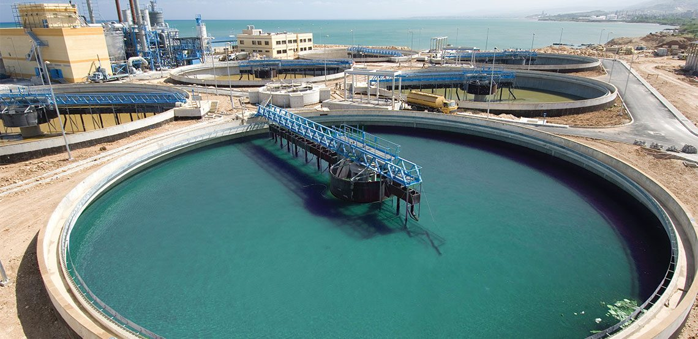
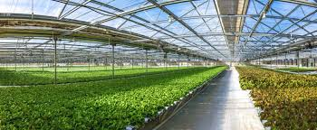
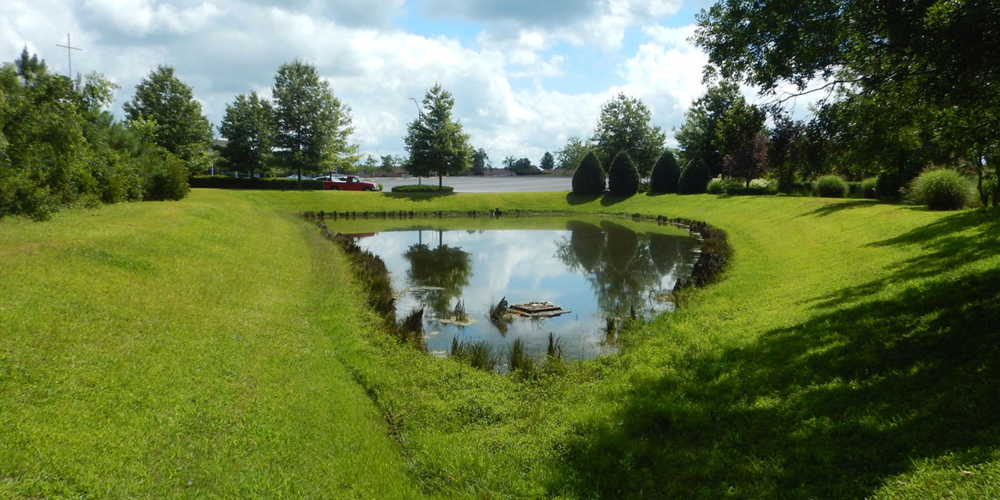
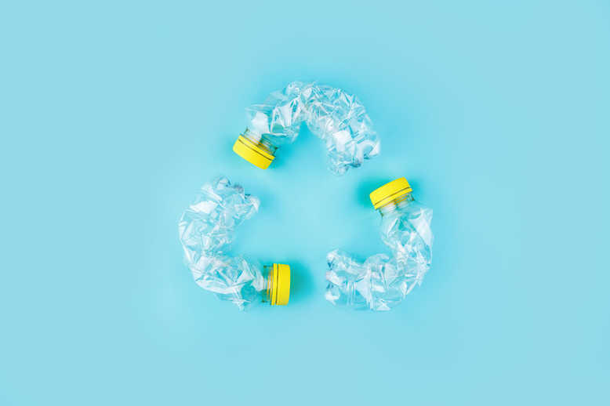

Wastewater treatment
Wastewater treatment consists of removing pollutants from wastewater through a physical,
chemical or biological process. The more efficient these processes are,
the cleaner the water becomes.

Green agriculture
Globally, agriculture accounts for 70% of water resources, so it is essential to have climate-friendly crops,
efficient irrigation that reduces the need for water and energy-efficient food production.
Green agriculture is also crucial to limit the chemicals that enter the water.

Stormwater management
“Stormwater management is the effort to reduce runoff of rainwater or melted snow into streets,
lawns and other sites and the improvement of water quality” according to the US Environmental Protection
Agency (EPA). It is important to avoid pollutants from contaminating
the water and helps to use water more efficiently.

Plastic waste reduction
80% of plastic in our oceans is from land sources. In order to reduce the amount of plastic
entering our ocean, we need to both reduce our use of plastic globally,
and to improve plastic waste management.

Water conservation
Without water conservation, we won’t go very far. It is central in making sure the
world has better access to clean water. It means being aware that
water is a scarce resource, taking care of it accordingly,
and managing it responsibly.